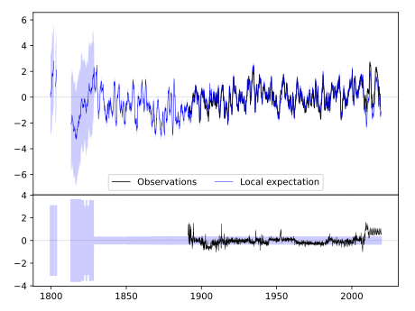
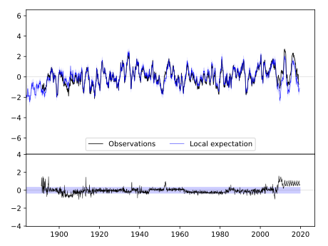

MANHATTAN [USA]



| Neighbour | Name | Country | Distance | Lon/Lat | Years |
|---|
| 720142 | MANHATTAN D.Burnette | USA | 0 | -96.6, 39.2 | 1828-2019 |
| 720174 | MANHATTAN | USA | 0 | -96.6, 39.2 | 1891-2019 |
| 720338 | PAWNEE CITY | USA | 105 | -96.2, 40.1 | 1882-2019 |
| 720169 | HORTON | USA | 109 | -95.5, 39.7 | 1888-2019 |
| 720173 | LAWRENCE | USA | 114 | -95.3, 39.0 | 1868-2019 |
| 720175 | MCPHERSON | USA | 124 | -97.6, 38.4 | 1891-2019 |
| 720178 | OTTAWA | USA | 130 | -95.3, 38.6 | 1893-2019 |
| 720162 | ATCHISON | USA | 136 | -95.1, 39.6 | 1865-2019 |
| 720328 | HEBRON | USA | 140 | -97.6, 40.2 | 1886-2019 |
| 720165 | ELLSWORTH | USA | 149 | -98.2, 38.7 | 1866-2019 |
| 720315 | AUBURN 5 ESE | USA | 154 | -95.7, 40.4 | 1893-2019 |
| 720164 | EL DORADO | USA | 156 | -96.8, 37.8 | 1886-2019 |
| 720318 | CRETE | USA | 157 | -96.9, 40.6 | 1882-2019 |
| 720177 | OLATHE 3E | USA | 158 | -94.8, 38.9 | 1864-2019 |
| 720323 | GENEVA | USA | 167 | -97.6, 40.5 | 1886-2019 |
| 720341 | SYRACUSE | USA | 170 | -96.2, 40.7 | 1871-2019 |
| 720291 | CONCEPTION | USA | 196 | -94.7, 40.2 | 1888-2019 |
| 720179 | SMITH CTR | USA | 200 | -98.8, 39.8 | 1888-2019 |
| 720314 | ASHLAND NO 2 | USA | 200 | -96.4, 41.0 | 1888-2019 |
| 720295 | LEES SUMMIT REED WR | USA | 201 | -94.3, 38.9 | 1863-2019 |